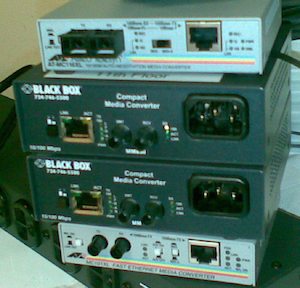

PCH 11 Copper vs Fiber(銅vs光纖) <<
Previous Next >> PCH 12 Ethernet Standards(以太網標準)
PCH 11 Converters(轉換器)
learning objectives/學習目標
Categorize characteristics of connectors and cabling.
分類連接器和電纜的特性。
Because of the wide variety of cable and connector types, there is sometimes a need to convert from one type of media to another. For example, if you have to make a connection between two LANs in buildings that are located one mile apart, but your network uses Cat 5e, UTP cabling, how can you make that connection? When you look at your routers, you find they only accept RJ-45 connections, but you know that you cannot run a Cat 5e cable more than 100 meters. How can you solve this problem? With a media converter.
由於電纜和連接器的類型多種多樣，有時需要從一種介質轉換為另一種介質。例如，如果你必須在相距一英里的建築物中的兩個LAN之間建立連接，但是你的網絡使用Cat 5e，非屏蔽雙絞線電纜，那麼如何建立連接？當您查看路由器時，會發現它們僅接受RJ-45連接，但你知道不能將Cat 5e電纜的長度超過100米。你如何解決這個問題？帶媒體轉換器。
Using a media converter, you can convert your RJ-45 connection into an ST, SC, or LC fiber connection, as shown in the image below. Then, you run the one-mile fiber cable to the other building, and use a media converter to convert from the ST, SC, or LC fiber connection back to the RJ-45 the other router requires. Because this is a simple, “dumb” device, it simply converts whatever is received on the first media type and repeats it back out the second media type. Common types of media converters are from Ethernet (copper) to fiber-optic (and back) or coaxial to fiber-optic (and back).
使用媒體轉換器，您可以將RJ-45連接轉換為ST，SC或LC光纖連接，如下圖所示。然後，將一英里的光纜連接到另一座建築物，並使用媒體轉換器將ST，SC或LC光纖連接轉換回另一台路由器所需的RJ-45。因為這是一個簡單的“啞”設備，所以它僅轉換在第一媒體類型上接收到的所有內容，然後將其重複播放回第二媒體類型。媒體轉換器的常見類型是從以太網（銅）到光纖（然後向後）或從同軸電纜到光纖（然後向後）。

Media converters. Photo used under CC-BY-NC license from Adrian Black
PCH 11 Copper vs Fiber(銅vs光纖) <<
Previous Next >> PCH 12 Ethernet Standards(以太網標準)